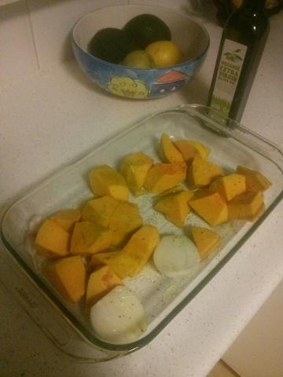

")


| Prep time: 5 minutes | Cooking time: 1 1⁄4 hours | Total time: 1 1⁄3 hours |
A great variation on lasagne, works pretty much every time so long as you get a decent bit of pumpkin.
Note you can skip the bechamel and just use vegan cheese, which means you'll be eating a little quicker but I think the bechamel makes it better.
You will need a baking tray with 2 - 3 inch sides to bake the lasagne
1. Start by putting your pumpkin, pepper, onion and garlic in your baking tray, cover in olive oil and bake on a medium high heat for 30-45 minutes, until the pumpkin is just soft enough to mash
2. In a bowl combine the crumbled tofu, spinache and 1/2 the pasta sauce
3. Assuming the pumpkin is cooked, take the skins off the garlic, and mash the roasted ingredients together in a bowl
4. Put 2 tablespoons of pasta sauce on the bottom of the baking tray, along with a couple of tablespoons of water
5. Cover the bottom of the baking tray with pasta sheets, for me that usually means two and a half sheets
6. Add half of the mashed pumpkin mix, try to make sure the edges of the lasagne sheets have pumpkin on them as they can go dry and hard when baking if they aren't moist
7. Put two and a half pasta sheets on
8. Add half of the tofu mixture, then add the pasta and repeat steps 6,7,8 (without getting into an infinite loop)
9. You should now have no mixture left, and the top layer is tofu. Pop it back in the oven for 25 minutes
Now for those not making the bechamel, I assumed you put the vegan cheese on in step 9. For everyone else we want to make the bechamel which takes 5-10 minutes, whilst the lasagne is starting to cook.
1. Add two tablespoons of olive oil to a saucepan on a low heat
2. Add plain flour and nutmeg
3. Add first cup of milk
4. Stir, stir like you give a damn, stir like your life depended on it. It's very hard to stop it going lumpy, I use a variety of tricks, I mash the lumps with my wooden spoon, up against the side of the saucepan, I use my potato masher, and if all else fails a hand blender
5. Slowly add the other cup of milk, stirring all the while. We want it to have a soft texture to spread on the lasagne, so add more milk or water if needed
6. Bring to a boil, you should see hot air popping out the top of the bubbling mixture.
7. Add nutritional yeast.
Now take the little bit cooked lasagne out of the oven and add the bechamel to the top. I usually use a spoon to put even sized clumps over the top of the lasagne and then smooth them out with the back of the fork.
Put the lasagne back in the oven for the remaining time, which is basically until the pasta is soft. We are almost there.
Cook the walnuts in a small hot pan for about a minute, then add the tamari and stir through.
Warm up the remaining half of the pasta sauce. I usually add a little water (1/3 cup etc) to this so that it's more saucey for pouring on the lasagne.
Cut your lasagne into 6 pieces (or 4 if you are really hungry). Put the lasagne on a plate, bowl, however you are doing it. Cover with a portion of the pasta sauce, then sprinkle a few walnuts on it.
Serve with a garden salad.